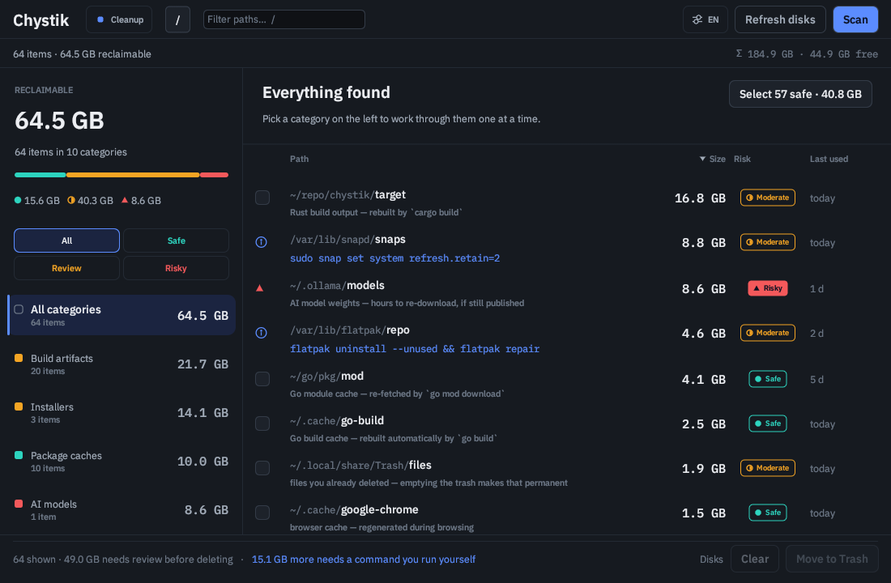

A safety-first disk-cleanup tool that knows what a directory is.
Abstract
Disk analysers like QDirStat and Filelight tell you a directory is 8 GB. They do not tell
you that it is ~/.cache/go-build, that Go rebuilds it on the next compile, and
that deleting it costs you forty seconds. Chystik does.
It classifies what it finds into fifteen categories, reports both the cost of losing an item
and whether Chystik may clean it automatically, and — where native-trash safety is verified
— moves what you choose to the desktop trash, never straight to unlink.

Roughly two hundred rules recognise package caches, build outputs, downloaded toolchains, AI model weights, agent transcripts, container layers and desktop junk — each with a sentence explaining what it is and how it comes back.
Every path passes through a guard before deletion: system directories, .git,
.ssh, .gnupg and your settings are rejected outright, symlinks and
Windows reparse points are never followed, and the scan root itself is never deletable.
Linux, macOS and Windows deletion go through their native desktop recovery mechanisms. On a platform without a verified native-trash adapter, cleanup is disabled rather than falling back to direct deletion.
Chystik prunes a classified subtree during its parallel jwalk walk and skips
pseudo, read-only and network mounts. See the reproducible benchmark method and reference measurements;
timings depend on the machine, filesystem, target and cache state. The interface is available
in English and Ukrainian, detected from your locale.
Recovery says what losing data costs. Cleanup policy says what Chystik is allowed to do. An automatic recovery class alone never grants deletion permission.
target directory, a node_modules with a lockfile beside it,
a Gradle distribution. Recoverable, but you will wait.This is a tool that deletes things, so the safety model is the product.
| Layer | What it does |
|---|---|
| Rules | Only match paths a rule explicitly recognises. There is no “delete anything over N GB”. |
| Recovery | Every match states its recovery cost. Manual / irreplaceable data is never bulk-selectable. |
| Cleanup policy | Only Auto-cleanable exact paths can join clean --safe; review-required, tool-managed and advisory findings cannot. |
| Size floor | Findings under 1 MiB are dropped, so the signal is not buried in noise. |
| Guard | guard::check runs before every deletion and refuses platform-protected roots, protected names, symlinks and anything outside the scan root. |
| Manifest | Nothing is deleted until you have seen the full list with per-item guard verdicts. |
| Capability | platform enables native-trash cleanup only where its safety contract is verified; every other target is scan-only. |
A crate-level test asserts that no rule can ever propose a path the guard refuses — the two cannot silently disagree.
It is still your disk. Rules can be wrong about your machine. Read the manifest.
Build artifacts · Package caches · IDE & toolchains · AI models · Browser & system · Android dev · AI agents · Containers · Installers · Games · Media · Messengers · Cloud sync · Office · System junk
chystik is the terminal frontend over the same scan, exclusion, guard and
native-Trash policy the desktop app uses. It starts no GUI, daemon, classifier or network
service.
chystik scan --safe --min-size 100MiB chystik explain ~/.cache/go-build chystik clean ~/work --safe --dry-run chystik report ~/work --format jsonl > chystik-report.jsonl
In an interactive terminal, human scan opens an alternate-screen table with live
counters and keyboard navigation; --no-tui, --quiet and redirected
output fall back to readable line progress. Machine formats never receive TUI escapes.
| Code | Meaning |
|---|---|
| 0 | Successful command; an empty scan is successful. |
| 1 | Operational failure or partial cleanup. |
| 2 | Invalid arguments or unusable configuration. |
| 3 | User cancelled confirmation or selection. |
| 4 | Policy refused every requested cleanup item. |
| 5 | Ctrl-C, SIGTERM or SIGHUP interrupted a scan. |
Full CLI reference — JSON/JSONL schemas, confirmation policy, completions, chystik(1) →
| Platform | Scan | Cleanup | Artifact |
|---|---|---|---|
| Linux x86_64 | Supported | Native desktop trash | AppImage, .deb, .rpm, Arch recipe |
| macOS | Preview | Native Trash | No signed/notarized artifact yet |
| Windows 10/11 x64 | Preview | Native Recycle Bin | Portable ZIP, unsigned |
| Windows 11 ARM64 | Preview | Native Recycle Bin | Portable ARM64 ZIP |
| Other | Unsupported | Disabled (scan-only) | Conservative fallback adapter |
Cleanup is deliberately asymmetric: a platform only advertises native-trash cleanup after it proves both a native recovery mechanism and its symlink/reparse-point contract with real integration tests. There is no direct-delete fallback. Full matrix →
chmod +x Chystik-{{VERSION}}-x86_64.AppImage && ./Chystik-{{VERSION}}-x86_64.AppImage
sudo apt install ./chystik_{{VERSION}}_amd64.deb
sudo dnf install ./chystik-{{VERSION}}-1.x86_64.rpm
cd packaging/arch && makepkg -si
Expand-Archive .\Chystik-{{VERSION}}-windows-x86_64.zip -DestinationPath .\Chystik
.\Chystik\Chystik-GUI.exe
git clone https://github.com/pasichDev/chystik cd chystik && cargo build --release ./packaging/install.sh
Desktop dependencies: build-essential pkg-config libgtk-3-dev on Debian/Ubuntu,
gcc pkgconf-pkg-config gtk3-devel on Fedora,
base-devel cargo pkgconf gtk3 libxkbcommon-x11 on Arch.
Adding a cleanup rule is usually a one-line table entry plus a test; that is the most useful contribution. Security issues go through SECURITY.md, not the public issue tracker.